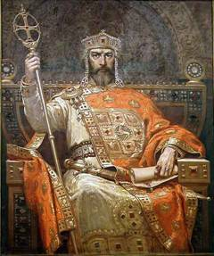

Костянтин був сином імператора Лева VI Мудрого, і його четвертої дружини Зої Карбонопсини. Четвертий шлюб був заборонений церквою, тому Костянтин вважався бастардом, хоч і був єдиним спадкоємцем імператора. Лише в січні 906 року Костянтин був охрещений, а в квітні Лев і Зоя, були повінчані в церкві незважаючи на протести патріарха Миколая Містика. Прізвисько Багрянородний походить від пурпурового залу імперського двору в якому народжували імператриці, і повинне було підкреслити законність імператорських претензій Костянтина.
15 травня 908 р. був вінчаний як співправитель батька. У 912 році Лев помер й імператором став його брат Олександр, який однак також помер через рік. 8-річний Костянтин був проголошений імператором під опікою регентської ради. У 919 році Костянтин, якому тоді було лише 14 років, був одружений з донькою командувача візантійського флоту Романа Лакапіна, який ще наприкінці 915 р. змусив зятя зробити себе співправителем, а у 920 р. узурпував владу і став імператором Романом І.
Тільки 16 грудня 944 Костянтин зумів усунути Романа й заслати на Принцеві острови у Мармуровому морі. Лише у віці 39 років Костянтин VII зумів стати справжнім імператором 6 квітня 945 р. зробив своїм співправителем сина Романа, євнуха Василія Лакапіна, який був призначений паракімоменом, тобто першим міністром, Василій мав великий вплив на візантійські державні справи, який зберіг і при наступниках Костянтина.
Помер у 959 році, за деякими даними був отруєний своїм сином Романом.
Імператор під час свого правління значно активізував військові дії проти арабів. Початок бойових дій виявився невдалим, і надіслане на відвоювання Криту військо було розбите (949).
Візантійські армії перейшли Євфрат (952), але були відкинуті. Завоювання на Сході були відновлені завдяки Никифору Фоці та Іоанну Цимісхію. Найбільшим досягненням ромейського зброї стало взяття Самосати (958). За правління Костянтина, у 941 році був здійснений відомий похід київського князя Ігоря на Царгород. Невдовзі у 944 р. було укладено торговий договір між Візантією та Київською Руссю. 957 року Константинополь відвідала княгиня Ольга, де, вірогідно, була хрещена.Відсторонений від управління імперією, Костянтин заповнював своє дозвілля писанням книжок, наукою, ознайомленням із античною літературною спадщиною і став одним із найосвіченіших людей свого часу. Він працював над укладанням різних енциклопедичних довідників («Про посольство», «Про феми», «Про доблесть і зло» та ін.), авторство низки яких приписане йому давньою традицією
Найвідомішими і найзначнішими його творами є «Про церемонії візантійського двору» та «Про управління імперією». Перший вважається головним джерелом про посольство великої княгині київської Ольги до Константинополя та її зустрічі з Костянтином (імовірно — 946).Другий твір (складений в 943—953) містить багато цікавих відомостей про слов'ян і печенігів, ранню географію та історію Київської Русі. Зокрема Костянтин описує діяльність київської русі (торгівлю, збір полюддя), вперше згадує низку міст, і називає руських правителів — Інгора і сина його Сфендослава.
«Човни що приходять до Царгороду з далекої Руси, себто з Немогарда, де сидів Свендостлав, син Інгоря, князя Руси, з замка Мілініска, й із Теліуци, і Чернігоги і з Вусеграда. Всі ото вони ідуть вниз рікою Дніпром і звертаються до замку Кіоава, званого Самватас. А їх підвладні Славяни, звані Кривітени та Лендзяніни й інші Славяни під час зими вирубують в горах дерево на човни, і обробивши, як прийде час, як розстане лід, спускають їх в близькі озера. І як спустять в ріку Дніпро, йдуть тією рікою і приходять в Кіову; витягнувши, виставляють човни й спродають Русі. А Русь купує самі кадуби і розламавши давні однодеревні (човни), беруть з них весла, уключини (до весел) і інший припас і споряжають (нові).»